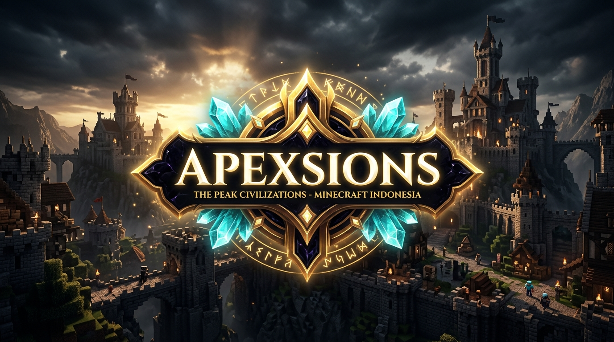

Apexsions Ecosystem — Server Game Minecraft RPG/MMO
Ekosistem server game Minecraft berskala besar dengan konsep 3 Kerajaan teritorial, simulasi ekonomi pasar bebas fluktuatif cuaca/bioma, sistem kedaulatan tanah polygon BlueMap 3D, dan 9 suite plugin Java kustom.
apexsions.com:32348
Java & Bedrock Crossplay

Sumber Kode & Lokasi Monorepo Terverifikasi
Proyek ini dikembangkan dan dikelola secara lokal pada direktori:
C:\Apex Plugin (Terdiri dari Minecraft/plugins/, Website/, build.ps1, dan DOKUMENTASI.md).
Peran & Kontribusi Mandiri Saya
Dalam proyek ini, saya bertindak sebagai Lead Developer & Server Architect yang merancang dan menulis logika sistem dari nol:
- Menulis logika kode Java 21 menggunakan PaperMC API dan Spigot engine.
- Merancang formula hitungan matematika ekonomi pasar dinamis (Dynamic Shop Price Clamping 85%-120%).
- Menyusun skrip kompilasi otomatis Smart Turbo Multi-Compiler via PowerShell (
build.ps1). - Mengintegrasikan visualisasi poligon kedaulatan wilayah ke web BlueMap 3D.
Sistem 3 Kerajaan Berdaulat
Penerus Dinasti Sions dengan spesialisasi Speed, Luck, reduksi damage Royal Aegis, diskon pajak lelang 30%, dan spawn ibukota timur.
Persekutuan prajurit cadas tangguh dengan mining speed tinggi, damage pukulan ekstra, dan daya tahan tempur garis depan.
Peradaban mandiri kaum pekerja dan pemanah rimba dengan ketahanan alami terhadap racun, bonus panen drop rate, dan pertahanan kanopi.
Suite 9 Plugin Java Mandiri di Minecraft/plugins/
Otoritas wilayah faksi, kedaulatan tanah (/claim) dengan pajak upkeep harian, BlueMap polygons, sistem warp GUI 54-slot, dan integrasi kit.
Komunikasi Kyori MiniMessage, channel Global/Kingdom/Staff, showitem pamer barang, dan sistem report staf 3 lapis.
Multi-currency Rupiah & Diamond, pasar lelang (/ah) dengan escrow claim otomatis, dan transfer transaksi aman.
200 level musim berhadiah, daily/weekly quests, tingkatan Citizen/Sio/Exsio, dan visual editor admin 54-slot.
Pasar dinamis 6 kategori dengan rasio jual dasar, formula fluktuasi cuaca in-game, dan pajak wilayah per-kerajaan.
Mini-game memancing interaktif berbasis ritme tarikan (Active Reel), joran kustom, 6 tingkat rarity ikan, dan virtual bait.
Sistem sihir kustom: gacha enchanter dual-currency, mystery dust booster, dan white/black scrolls proteksi tempa.
Sistem peti hadiah animasi mewah, pembagian kunci crate, dan integrasi hadiah ekonomi.
Render logo/banner gambar multi-tile asinkron dalam game dan konfirmasi URL tautan web.